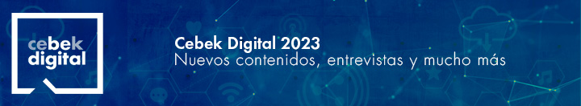
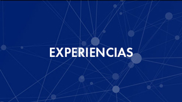
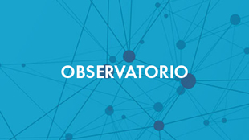
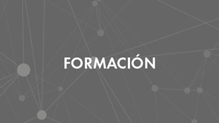
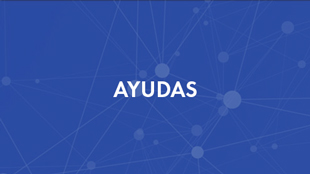

Si no puede visualizar correctamente este mensaje pulse aquí

Cebek Digital comienza su andadura tras un año marcado por la pandemia y la aceleración digital, en
2022 llegó una nueva revolución digital con la web 3.0, ¿Qué nos deparará 2023?
Tendencias y contenidos Cebek Digital en 2023
Tal y como hemos dicho en otras ocasiones, la transformación digital no es únicamente
tecnológica. En el 2023 parece que iremos cambiando hacia un nuevo tipo de
organizaciones dónde ser ágiles será prioritario, más centradas en las personas, en
sus competencias digitales, la creatividad y adaptación al cambio. La tecnología
tendrá un papel importante en todo ello pero es preciso ponerlo en contexto.
Hoy más que nunca es necesario compartir y colaborar.
Tras dos años de andadura, entrevistamos a Edurne Errazti, Responsable del proyecto
para que nos cuente cómo ha evolucionado y las experiencias vividas.
Si no has tenido ocasión de seguir nuestros contenidos, aquí tienes una nueva oportunidad. En los
siguientes enlaces tienes disponibles los resúmenes del año de nuestros principales apartados.
¡A qué esperas...!

Vuestras experiencias son la parte más valiosa de nuestro proyecto

52 publicaciones sobre diferentes áreas temáticas

52 sesiones (83 horas) y 862 asistentes

Informar sobre los principales organismos públicos y las convocatorias vigentes